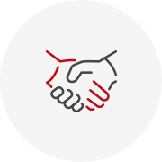
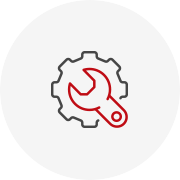

3대 경영전략
하이탑은 창의적인 도전정신을 바탕으로 특수포장재라는 대한민국 건설의 새로운 부분을 개척하였고, 친환경·최첨단의 제품 개발과 고품질의 도시경관용 건자재를 통하여 사회와 국가에 공헌하고 주주와 고객 그리고 건설 문화에 이바지하고자 최선을 다하고 있습니다.
-

- 신뢰경영
-
신뢰경영을 실천함으로써 인간존중의 정신을
토대로 인간미 넘치는 노사관계와 상하간의
신뢰관계를 더욱 공고히 함과 동시에 고객과
사업파트너의 기대와 믿음에 부응하고자 합니다.
-

- 인재중시경영
-
인재중시경영을 통하여 기업의 생명이
인재라는 인식을 더욱 공고히 하고 뛰어난 인재의
양성으로 최고의 제품을 고객에게 나눌 수 있는
참된 기업이 되고자 합니다.
-

- 품질경영
-
품질경영을 실시하여 한번 찾은 고객은 영원한
고객으로 섬김과 동시에 글로벌화 되어가고
더욱 치열해지는 무한 경쟁의 시장에서
찬란히 빛나는 하이탑이 되고자 합니다.